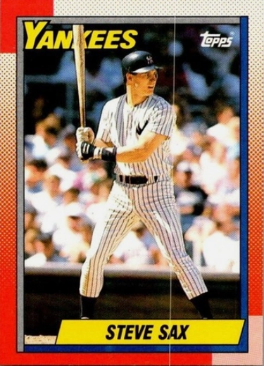

Steve Sax
Career Highlights & Facts
(Facts are AI-generated and may require verification)
- Earned Rookie of the Year honors after a standout debut season.
- Played alongside a sibling on the same professional roster.
- Appeared as a character in a famous animated television show episode about baseball.
Would you like to find out more about Steve Sax?
Read Player Biography
Steve Sax
January 4, 2012
/
in
BioProject - Person
Rookie of the Year
1980s All-Stars
,
1990s All-Stars
Siblings
Nuclear Powered Baseball
/
by
admin
This article was written by
Alan Cohen
Sometimes it is by chance. Sometimes it is inevitable. But each time it is accompanied by a certain euphoria. So it was that on August 17, 1981, in San Antonio, Texas, the phone rang. Los Angeles Dodgers second baseman
Davey Lopes
had been placed on the disabled list with a groin injury. So the call went to Double-A San Antonio for 21-year-old Steve Sax, who was batting .346 for the Texas League team. Manager
Don LeJohn
told Sax he was to join the Dodgers in Chicago. Sax took a 6:00 A.M. flight the next morning. After his plane landed in Chicago at 10:00 A.M., he went straight to
Wrigley Field
.[fn]Mark Heisler, “Is the End at Hand for the Gang of Four?”
Los Angeles Times
, August 19, 1981, E1.[/fn] And the Dodgers had, in the words of manager
Tom Lasorda
, “a little breath of fresh air.”[fn]Heisler, “Sax Plays a Part as Dodgers Hit High Notes, 6-1,”
Los Angeles Times
, August 29, 1981, D1.[/fn]
Stephen Louis Sax was born on January 29, 1960, in Sacramento, California, the third of five children born to John Thomas and Nancy Jane (Colombani) Sax. Cheryl came first, followed by David, Steve, Tammy, and Dana. The family lived on a small farm and his father drove a truck before a series of heart problems caused him to stay at home. Nancy worked as a secretary to help provide for the family.
As a youngster, Steve was always hustling, and he never stopped. “I just plain loved to run,” he once said. “So I ran everywhere. If I was running a race, I would run to the starting line. And yes, I would run to first base after walks.”[fn]Steve Sax and Steve Delsohn,
Sax!
(Chicago: Contemporary Books, 1986), 22.[/fn] In Little League he was a pitcher, with his older brother,
Dave Sax
, catching and his father serving as the team’s coach. Sax’s best memory of those days is the time he pitched a no-hitter.[fn]
Sax!
, 25.[/fn]
Baseball was the major passion in young Steve’s life, but at age 11 he began playing the drums. He became quite accomplished and twice during his time with the Dodgers played with the Beach Boys.
Sax attended James Marshall High School in West Sacramento. In his junior year he was the league MVP and was named to All-City, All State, and All-American teams, playing shortstop and third base. In his senior year, he batted .357, was selected Golden Empire League MVP, and was named to the All-Northern California baseball team.
Sax was drafted by the Dodgers in the ninth round of the 1978 free-agent draft. He had hoped to be drafted higher, but was still ecstatic when he heard the news. He didn’t sign right away as he had one game of Legion ball remaining. His father had just undergone heart surgery and, as Sax told it, was in the hospital when Steve promised to hit a home run for him. In his first at-bat in that American Legion appearance, he fulfilled that promise.[fn]
Sax!
, 29-30.[/fn]
Sax passed up a full scholarship to the University of Arizona and signed with scout Ronnie King of the Dodgers. His brother, Dave, who had not been drafted, was invited to a tryout by King, and also signed with the Dodgers. The brothers played together on four minor-league teams.
That summer they played for Lethbridge (Alberta), the Dodgers’ Pioneer League (rookie league) affiliate. Steve batted .328 in 39 games, and was on his way. His next two seasons were at Class A, but finding the right position for him proved problematic. In 1979, with Clinton (Iowa) in the Midwest League, after stints in the outfield and at third base, Sax was put at second base for the first time, playing 34 games there. He batted .290 with 25 stolen bases. In 1980 he played the entire season at second base for Vero Beach in the Florida State League, batting .283, driving in 61 runs, stealing 33 bases, and earning a promotion to Double-A San Antonio the next season.
At San Antonio Sax put up numbers that could not be ignored. His .346 batting average when the call came to join the Dodgers stood up as the league’s best. He was named the Texas League’s Most Valuable Player.
Resplendent in Dodgers uniform number 52, the 5-foot-11 Sax took the field for the first time on August 18, 1981, at Wrigley Field in Chicago, filling in for Lopes. The players strike that interrupted the season for two months had ended on July 31. So excited was Sax to be in the majors that “even the Bleacher Bums looked good to me,” he remembered.[fn]
Sax!
, 37.[/fn] Facing the Cubs’
Mike Griffin
, the right-handed-batting Sax first came to bat in the third inning, hit a slow roller up the middle, and beat out the throw to first base for his first major-league hit. In the field he handled nine chances without an error. The Dodgers won, 5-0.
Five days later, as the Dodgers lost 11-7 to the Cardinals in St. Louis, Sax hit his first major-league home run, off
Bob Shirley
.
On August 25-26 at Pittsburgh, Sax went on a tear getting, 7 hits in 10 at-bats to raise his average to .364 in his first eight games in Dodger Blue. On August 25, he went 4-for-5 in a 9-7 win and was rewarded with a gold chain with a gold bat, attached to which was a white pearl.[fn]Megan Morrow, “Everyone but Sax Keeps Tooting His Horn,”
The Sporting News
, April 10, 1982, 6.[/fn] The Dodgers won 8 of the first 10 games Sax started.
Sax made his Los Angeles home debut on August 27. It was the season of “Fernando-Mania,” but Sax was definitely noticed after his eruption in Pittsburgh. General manager
Al Campanis
said, “(H)e can hit with power, he’s exciting, he’s not afraid to get his uniform dirty, he can steal a base, and he can make the pivot.”[fn]
The Sporting News
, September 12, 1981, 52.[/fn] Mark Heisler wrote in the Los Angeles Times, “Sax was running out routine grounders [so] ferociously that people feared he was going to wipe himself out at first base.” In his second game at Los Angeles, he made an error and holed up in the trainer’s room. Pitcher
Dave Stewart
consoled the youngster, saying, “The thing I like about you, Saxy, is [that] when I’m out there you excite the hell out of me.”[fn]Heisler, “Sax Plays a Part.”[/fn]
Before the strike the Dodgers had compiled the best record in the National League West and, in October, defeated Houston in a division playoff series, then toppled the Montreal Expos in the League Championship Series to advance to the World Series against the New York Yankees.
The trip to the 1981 World Series was the first of two for Sax in his time with the Dodgers. By the time the Series began, Lopes had healed and Sax saw limited action. In Game One, he pinch-hit against Yankee ace
Ron Guidry
and flied out to center field. He entered Game Two as a pinch-runner in the top of the eighth inning and stayed in the game at second base. The Dodgers lost those first two games but swept the next four games for the world championship.
After the Series the Dodgers broke up their infield of
Steve Garvey
, Davey Lopes,
Bill Russell
, and
Ron Cey
, who had played together since 1973. Lopes was traded to Oakland and Sax took over as the second baseman in 1982. On Opening Day, against San Francisco, the enthusiastic Sax almost missed his debut. While running across the diamond to his position at second base in the first inning, he tripped and almost fell flat on his face. “That was a little embarrassing. If I had fallen down, I would have crawled under second base,” he said.[fn]David Leon Moore, “Meet Steve Sax: Dodgers’ Mr. Enthusiasm,”
San Bernardino County Sun
, April 7, 1982, B-7.[/fn] He went 2-for-4, was the pivot man on a key sixth-inning double play, and set up the game-winning run with a single in the ninth.
From that auspicious beginning, Sax went on to bat .282, and play a sparkling second base. He was the only rookie named to either All-Star team. In the All-Star Game at Montreal , won by the NL 4-1, he pinch-ran in the fifth inning, stayed in the game at second base, and singled in his only turn at bat. Over the 11 years from 1982 through 1992, Sax was rarely out of the lineup, playing in 150 or more games in eight of those seasons.
Sax’s enthusiastic play early on made him a favorite for Rookie of the Year honors. He was often compared to
Pete Rose
for his style of play. Bob McCoy of
The Sporting News
wrote that Sax “runs out his walks and regards a dirty uniform as a badge of honor.”[fn]Bob McCoy, “Just Call Him Steve Hustle …,”
The Sporting News
, July 5, 1982, 13.[/fn] Sax himself said that, “I’ve patterned myself after (Rose). I’m a very aggressive player, and try to give 100% all the time. I try to force mistakes and make things happen.”[fn]“Sax Wins NL Rookie Award Over Ray,”
Syracuse Post-Standard
, November 23, 1982.[/fn] During August he set a record for hits in a month by a Dodger rookie with 43. The record stood for 31 years. He set a team rookie record for stolen bases with 49. Sax led the Dodgers in runs scored (88), hits (180), and stolen bases (49), and tied with
Ken Landreaux
for the team lead in triples (7).
In 1983 Dave Sax joined Steve on the Dodgers. On June 3 they were in the starting lineup together for the first time. For a brief interlude Sax became a defensive liability for the Dodgers. All of a sudden, he was unable to make throws to first base on the most routine of groundballs. By the time of the AllStar break, he had committed 24 errors. He said, “I felt myself thinking too much, analyzing my every little mistake. It was like I lost my ability to be spontaneous. I found myself pressing.”[fn]
Sax!
, 58.[/fn] He remembered when it began: “It was April 6 against the Expos. I took a relay throw from the outfield, and I chucked it home past the catcher. Next day, I made another error. Pretty soon, the monkey was on my back.”[fn]Jon Saraceno,
USA Today
, March 21, 2001. The game actually took place on April 8, the Dodgers’ home opener. Sax actually made two errors, the first on a groundball in the first inning and the second on a throw home in the ninth.[/fn]
Sax’s year was made even more trying by his father’s health problems. They spoke of his throwing difficulties on the telephone just before his father, only 47 years old, died on June 10. In 1989 Sax remembered, “He told me, ‘One day you’ll wake up and this whole thing will be gone. I did the same thing when I was in high school.’ And he was right. One day I woke up and it was all over.” For the last 38 games of the season, Sax played errorless ball. “But about two years later,” he said, “I was talking to my mom about it and she said, ‘You know, your dad never had that problem. He was just trying to help you get over it.’ At the shame of his own pride, he told me that to help me get out of it.”[fn]Michael Martinez, “Sax Combines Comedy and Intensity,”
New York Times
, July 10, 1989, C-1.[/fn]
At the plate Sax got off to a slow start and was batting .232 after a Dodger loss to the Pirates on May 2. But then his bat got hot, and he ended the season batting .281. He was third in the league with a career high 56 stolen bases. There was an extra meaning in those stolen bases. Sax had partnered with the American Diabetes Association and was asking fans to pledge $1 each time he stole a base.[fn]Bud Furillo, “Sax Attacks Diabetes and Throwing Problem,”
Dodger Blue
, June 30, 1983.[/fn] Once again he was named to the All-Star team, this time as a starter. In the All-Star Game, played at Chicago’s
Comiskey Park
, he went 1-for-3 with an RBI. His throwing problem resurfaced in the second inning, as he was unable to throw out the American League’s
Manny Trillo
. The AL took a 2-1 lead and went on to a 13-3 win.
The Dodgers finished first in the NL West, but did not advance to the World Series, losing to the Philadelphia Phillies in four games during the bestof-five playoff series. Sax went 4-for-16 in the series with a stolen base.
Before the 1984 Season, Sax was rewarded with a five-year contract extension that kept him in Dodger Blue through 1988. At the beginning of the season the throwing problem re-emerged. Sax was frustrated and said as much: “I don’t know. I don’t understand it at all. It’s aggravating. It’s frustrating. My sister can make that throw. Fifty million women in America can do it. I’m just sick and tired of it.”[fn]
The Sporting News
, May 14, 1984, 20.[/fn] But the problem resolved itself during the season. Sax later in his career became a Gold Glove second baseman. Nevertheless, the subject of “The Steve Sax Syndrome” often came up. In 1987, former President Richard Nixon, attending a game at
Shea Stadium
, told Sax, “Glad to hear you got over your throwing problem.”[fn]
The Sporting News
, September 28, 1987, 6.[/fn]
Sax had an off-year in 1984. His batting average fell to .243, the worst in his time with the Dodgers. The team also fared poorly, finishing in fourth place in the NL West with a 79-83 record. The team and Sax bounced back in 1985. For the third time in five years the Dodgers won the NL West. Sax injured his ankle during a pickoff play in spring training and missed 20 of the Dodgers’ first 23 games. At the end of June, he was batting only .229. Then he put things together. He batted .311 over the final 84 games to bring his average to the season to .279, and batted .300 (6-for-20) in the NLCS as the Dodgers lost to the Cardinals in six games.
At the end of spring training in 1986, Sax was looking forward to the coming season. He said, “I’m ready. I’m having my best spring ever. I just feel like it’s time for everything to come together for me. …”[fn]
The Sporting News
, April 7, 1986, 50.[/fn] He proceeded to put up the best offensive numbers of his career, and embark on a durability path that would see him play in at least 155 games for six consecutive seasons.
Sax also, once and for all, overcame his defensive problems. In June he said, “I’m much more relaxed at the plate and in the field. I never had any Triple-A experience, and had never gone to college. My mental approach (was such that I) didn’t handle the bad times very well.”[fn]
The Sporting News
, June 2, 1986, 25.[/fn] He finished second in the league in batting average (.332), hits (210), and doubles (43), and for the first and only time in his years with the Dodgers, he won the Silver Slugger award among the league’s second basemen. He played in the All-Star Game after a two-year absence, and, in his only at-bat, singled to drive in a run.
Sax was named National League Player of the Month in September 1986, batting .400 with 11 doubles, 11 stolen bases, and 14 RBIs. He began the month with a 25-game hitting streak and from August 30 through the end of the season reached base safely in each of the 34 games in which he played. His hitting streak was the longest in the National League that season, and it ended with a 0-for-7 performance against the Giants in a 16-inning loss on September 28 at San Francisco. Sax was one of very few bright spots for the Dodgers in 1986, as they finished in fifth place in the NL West.
After the 1986 season it was disclosed that Sax had played much of the season in pain, though he never went on the disabled list. On December 10 he had surgery on a foot to remove a bone spur and reposition a nerve.[fn]
The Sporting News
, January 26, 1987, 39.[/fn]
On October 21, 1986, Sax married Debbie Graham. They had met the previous spring. They had two children. Lauren Ashley Sax, born in July 1987, and John Jeremy Sax, born in August 1988. The marriage ended in divorce.
Sax had another solid season in 1987, but the Dodgers again were below.500 (73-89) and finished fourth in the NL West. Sax batted only .198 in April, but came back strong. In September he put together a 19-game hitting streak, and finished the season at .280.
The 1988 season proved to be special for Sax and the Dodgers. In the offseason there had been some thought about moving him to third base and inserting
Mariano Duncan
at second.[fn]Gordon Verrell, “Sax Cool to Switching Sacks,”
The Sporting News
, January 11, 1988, 46.[/fn] But in spring training
Pedro Guerrero
took over third base, and Sax was back at second by Opening Day. Manager Tommy Lasorda said, “Saxie has become a much more selective hitter. He’s one of the best hitters I’ve ever seen going up the middle. He gets into trouble when he tries to pull everything or tries to hit one out of the ballpark.”[fn]
The Sporting News
, April 4, 1988, 37[/fn]
Sax batted .277 and had 57 RBIs in 1988, the best during his time with the Dodgers. Always a daredevil on the bases, he had 42 thefts in 54 attempts (77.8 percent), by far his best stolen-base ratio in his time in Los Angeles.
The Dodgers won the NL West and defeated the New York Mets in seven games for the pennant, with Sax getting some key hits during the series. In the World Series the Dodgers, plagued by injuries, went up against the bruising Oakland A’s, who featured
Jose Canseco
,
Mark McGwire
, and
Dave Parker
. Sax, after being barreled into by Parker, said he felt he had been run into “by a running condominium.”[fn]Mike Downey,
The Sporting News
, October 31, 1988, 4.[/fn] The Dodgers won the Series in five games with Sax batting .300. After it was all done, as Mike Downey noted in The Sporting News, “It was a World Series in which the Dodgers reportedly decided to celebrate their championship by pouring bottles of iodine over one another’s heads. By the time it ended, Los Angeles manager Tommy Lasorda no longer filled out a lineup card with his nine best players. He just started asking for nine volunteers.”[fn]Ibid.[/fn]
After the season Sax was a free agent and elected to sign with the Yankees. His negotiations with the Dodgers had not gone pleasantly and Dodgers general manager Fred Claire was quoted as saying to Sax, “This is our final offer. If you think you’re getting screwed, don’t sign it. If you think you can get a better deal, take it.” Sax took a three-year, $4 million deal with the Yankees.[fn]Steve Dilbeck, “Sax Spurns Dodgers, Signs With Yankees,”
San Bernardino County Sun
, November 24, 1988, C-1.[/fn]
His years with the Dodgers were productive and he was definitely a fan favorite. His 290 stolen bases put him fifth on the all-time Dodgers list in that category. But he no longer felt wanted, and it was time to move on. Sax’s biggest regret was parting with close friends
Mike Marshall
and
Mike Scioscia
, both of whom shared his intensity for the game.
Sax spent three years in the Bronx, but the Yankees were between dynasties. The revolving door to the manager’s office was turning rapidly, and Sax played for three managers during his time in New York. Although the team finished each season well below .500, Sax performed excellently.
In 1989 he was named to the All-Star team and batted a team-leading .315. His 205 hits, 88 runs scored, and 43 stolen bases also led the team. Sax was clearly the most valuable player on a team that won only 74 games. It was the second time in his career that he had more than 200 hits in a season. Defensively he had the best season of his career, leading the league in fielding percentage (.987), making only 10 errors in 782 chances. He led the league in double plays turned at second base (117). A strong contender for the Gold Glove, Sax just lost out to Seattle’s
Harold Reynolds
. Yankees manager
Bucky Dent
, who had played beside Sax’s predecessor,
Willie Randolph
, said Sax “has done an outstanding job. He plays with super intensity. He’s always into the game. I love him.”[fn]Michael Kay, “Sax’s Glove Plays Solid Gold Tune,”
New York Daily News
, September 21, 1989, C 29.[/fn]
In 1990 the Yankees hit rock-bottom, finishing last in the AL East with a 67-95 record, Sax stole 43 bases for the second straight year, good for second in the league. He was caught stealing only nine times, and his 82.7 percent stolen base percentage was the best of his career. Once again he was named to the All-Star team and started at second base for the American League. It was Sax’s fifth and last All-Star appearance. His batting average, which had been .281 at the end of June, slipped to .260 for the season as he batted only .243 over his last 86 games.
It was a frustrating time for Sax. The intensity was still there despite the disappointing result. As Joel Sherman noted in the New York Post, Sax “considers himself a dirty uniform personified, a man who knows how to play only with passion and hustle. Those flying bats and slammed helmets (he broke five helmets in 1989) are not an act, but rather the symbols of his fury, of the rage of a player who plays with his soul as evident as the number six on his uniform.”[fn]Joel Sherman, “The Fire Still Burns,”
New York Post
, July 27, 1990.[/fn]
Before the 1991 season Sax received a four-year contract extension, worth $12.4 million, and he rebounded to have a great season. But it was more of the same for the team, with the squad finishing 71-91 under
Stump Merrill
. Sax’s batting average of .304 led the Yankees, as did his 38 doubles. He had a career-high 10 home runs. He was the most difficult man in the league to strike out, fanning on average once in every 17.2 at-bats.
On January 10, 1992, after three losing seasons, the pitching-poor Yankees traded Sax to the Chicago White Sox for
Domingo Jean
,
Melido Perez
, and
Bob Wickman
. Although his average dropped to .236 with Chicago, Sax was a key ingredient on a team that during the early part of the season, contended for the AL West lead. On May 17 he drove in five runs as the White Sox defeated Baltimore 14-10 to go into first place by a half-game. However, the team relinquished the lead and finished the season in third place, 10 games behind division champion Oakland.
In 1993 Sax got into only 57 games and batted .235 for the White Sox. By this time, he was no longer playing second base (
Joey Cora
was the second baseman) and he was used mostly as a left fielder or designated hitter. The White Sox won the AL West, but Sax did not play in the ALCS against the Toronto Blue Jays. His only home run that season came on June 25 against Seattle. It was off his old Dodgers teammate Tim Leary and was the last of his 54 career home runs.
In April 1994 Sax was placed on the disabled list with a bruised heel. While on rehab with the team’s Birmingham Double-A affiliate, he was released by the White Sox. He signed on with the Oakland A’s, playing briefly for
Tony LaRussa
. He got into seven games with the A’s, batting .250 (6-for-24) and appeared in his last game on May 8, 1994. He underwent surgery, but was unable to return to the playing field, and was released after the season.
For his 14 year major-league career, Sax batted .281 with 1,949 hits and 444 stolen bases.
After retiring as a player Sax contributed commentary on ESPN and was a baseball analyst for Fox Sports’
Prime Time
. He appeared as a characterization of himself on
The Simpsons
. Sax wrote an article on personal responsibility and self-reliance for the
Wall Street Journal
. For a time in 1995, Sax considered running for the California legislature, but withdrew his name from consideration.
During the 2013 season, Sax was the first-base coach for the Arizona Diamondbacks, working with former Dodgers teammate
Kirk Gibson
, the Diamondbacks manager.
Sax has a Black Belt in Shotokan Karate and is skilled in kick-boxing as well. He has owned a martial arts studio. In 2001 he became a vice president of investments for the Royal Bank of Canada. His clients included several ballplayers. His belief was that the potential for athletes being victimized is very real. In 2005 he said, “I have heard of instances of athletes getting ripped off. It’s like giving an 18-year-old the keys to the car with a six-pack in the back-seat. It’s a recipe for disaster.” He wrote the motivational book
Shift: Change Your Mindset and Change Our World
. In 2014 Sax was on the radio and in media with MLB on Sirius Satellite Radio and MLB Advanced Media.
Sax founded the Steve Sax Foundation, with a goal of helping motivate young people. The program partnered with other organizations, sports teams and corporation, as well as parents, to help aid youngsters.
This biography is included in “Nuclear Powered Baseball: Articles Inspired by The Simpsons Episode ‘Homer At the Bat’ ” (SABR, 2016), edited by Emily Hawks and Bill Nowlin. For more information or to purchase the book in e-book or paperback form,
click here
.
Sources
Books
Sax, Steve, and Steve Delsohn.
Sax!
(Chicago: Contemporary Books, 1986).
Newspaper Articles
Boswell, Thomas. “When you call the Hall, Sax certainly has appeal,”
Washington Post
, April 20, 1992, C6.
Curry, Jack. “Sax Finds Happiness Being an Ex-Dodger,”
New York Times
, March 14, 1991, B-12.
Dilbeck, Steve. “Sax Spurns Dodgers, Signs with Yankees,”
San Bernardino County Sun
, November 24, 1988, C-1.
Downey, Mike. “Dodgers Had to Toast Victories with Iodine,”
The Sporting News
, October 31, 1988, 4.
Durso, Joseph. “Sax Steps Into Dodger Infield,”
New York Times
, March 23, 1982, D25.
Heisler, Mark. “Steve Sax: Chosen One at Second Base for Dodgers,”
Los Angeles Times
, April 3, 1982, B11.
Madden, Bill. “Sax Proves Himself a Good Investment,”
The Sporting News
, October 9, 1989, 14.
Martinez, Michael. “Sax Combines Comedy and Intensity,”
New York Times
, July 10, 1989, C-1.
Oberjuerge, Paul. “Sax Is on Fast Track to Pennant,”
San Bernardino County Sun
, August 22, 1988, C-1.
Verrell, Gordon. “No Hypnosis—Not Yet: Sax,”
The Sporting News
, August 22, 1983, 17.
______. “Sax’s Throwing Woes Are Back,”
The Sporting News
, May 14, 1984, 20.
______. “Dodgers Can’t Blame Sax This Year,”
The Sporting News
, June 2, 1986, 25.
Other
Baseball-Reference.com.
Los Angeles Times
.
New York Times
.
San Bernardino County Sun
.
The Sporting News
.
Author interview with Steve Sax, October 28, 2014.
Full Name
Stephen Louis Sax
Born
January 29, 1960 at Sacramento, CA (USA)
Stats
Baseball Reference
Retrosheet
Tags
Rookie of the Year
·
1980s All-Stars
·
1990s All-Stars
·
Siblings
·
Nuclear Powered Baseball
Career Totals
| WAR | AB | H | HR | BA | R | RBI | SB | OBP | SLG | OPS | OPS+ |
|---|---|---|---|---|---|---|---|---|---|---|---|
| 25.7 | 6940 | 1949 | 54 | .281 | 913 | 550 | 444 | .335 | .358 | .692 | 95 |
Statistics via Baseball-Reference.com
The Original Clue